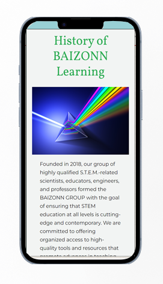
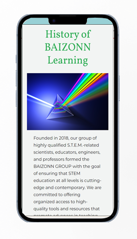

Design & Develop
Baizonn's learning center
In this project we had to develope a custom website on word press for a learning center called baizon. Our primary task was to design the website's structure to accommodate the required content, which could be either static or dynamic. For instance, dynamic content included a modifiable timetable and a changing news
feed, while static content comprised sections like the "About" page. During this project we used scrum as our main communication tool as our team already had expirience on how to use it. For organizing our workflow and tasks, we utilized trello as our scrum board. In addition, we established a shared google doc where we documented our individual contributions, planned tasks, and any challenges encountered throughout the project. This allowed us to maintain a transparent overview of our progress, ensuring effective collaboration and accountability among team members. We updated the document on a weekly basis, providing detailed information about what had been accomplished, what was planned for the upcoming week, and any obstacles or issues we encountered along the way. This method facilitated efficient communication and kept everyone informed about the project's status. We used the scrum board to split tasks among the teammates I chose to complete the following tasks: display the awards, create the registration form, link schedule and session to the class page.
Technologies used
- Wordpress
- Wordpress plugins
- Custom themes
 
